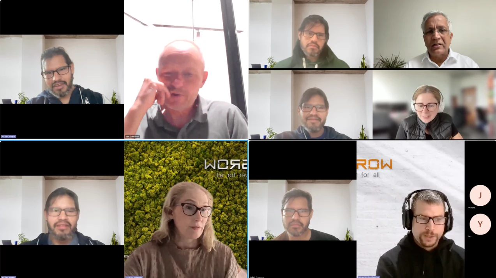
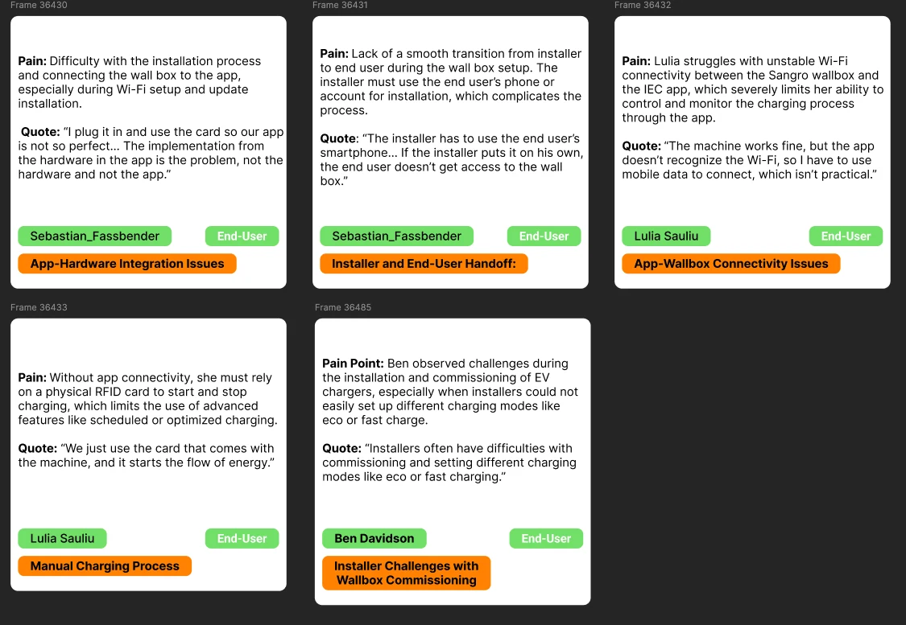

Make technical workflows understandable without removing the depth experts need.
Senior Product Designer · Munich, Germany
Making complex products feel simple and intuitive.
I use research, systems thinking and close collaboration to turn technical enterprise platforms into experiences people can understand and trust.
Research-driven product strategy
Enterprise and data-heavy UX
Europe ↔ China collaboration
Residential plantEnergy overview
LiveEnergy FlowEV ChargerDashboard
✓ Normal☀ +32°
Solar9.05 kWGenerating
Home4.21 kWConsuming
Battery0.00 kW71% charged
Grid4.81 kWExporting
Today yield30.4 kWhSelf-consumption47%Saved today€4.20
ResearchUnderstand the real need
Systems thinkingMake complexity manageable
CollaborationAlign teams around users
What I bring
Bridging users, technology and global product teams.
I work best on products where the challenge is bigger than one screen: multiple user roles, technical constraints, complex data and teams with different perspectives.
My experience in the energy industry taught me how to move between research, product strategy and hands-on design while representing European users inside a global organisation.
Use research and validation to challenge assumptions and guide decisions.
Translate user needs across product, engineering and cross-cultural stakeholders.
Selected work
Three projects. Three different product-design strengths.
Each case study focuses on work I personally led or meaningfully contributed to. Confidential interfaces and data are recreated, simplified or anonymised.
01Strategy & concept design
Future Residential Energy Management
Research, journey mapping and concept exploration shaped a clearer Energy Flow direction for European homeowners.
Product strategySystems thinkingConcept design
Read the case study ↗

Project artifactDeveloped Energy Flow direction
Research evidence
Interviews and synthesis
6 interviews · 3 markets


02Generative UX research
Home EV‑Charging Behaviours
Six interviews across three European markets revealed needs around setup, smart charging, cost transparency and flexible control.
User interviewsInsight synthesisProduct opportunities
Read the case study ↗
Product views tested
Two role perspectives
Homeowner and installer


03Evaluative research
iSolarCloud Mobile Redesign Evaluation
Moderated studies with installers and homeowners informed ongoing improvements to the mobile experience.
Usability testingRole-based UXProduct iteration
Read the case study ↗
How I work
Understand before designing. Make decisions visible.
I adapt the process to the problem, but the goal stays consistent: connect evidence to decisions and decisions to outcomes.
Understand the context
Users, business goals, market direction and technical realities.
Focus the opportunity
Turn scattered information into clear problems and priorities.
Explore and communicate
Use flows, concepts and prototypes to make decisions tangible.
Learn and improve
Test assumptions, communicate evidence and iterate with the team.
About me
A designer shaped by different cultures, users and ways of working.

I’m an American Product Designer based in Germany, with experience designing complex software for the European energy market and collaborating closely with teams in China.
My strongest work happens when I can combine research, product thinking and interaction design—especially when a product needs to serve people with very different levels of knowledge.
I care about clear communication, honest collaboration and asking the questions that help teams look beyond the immediate feature request.
Based inMunich, Germany
FocusSenior Product Design
ExperienceEnterprise · Energy · SaaS
Let’s connect
Have a complex product challenge that needs a clearer path forward?
Explore my experience, download my CV or reach me directly.